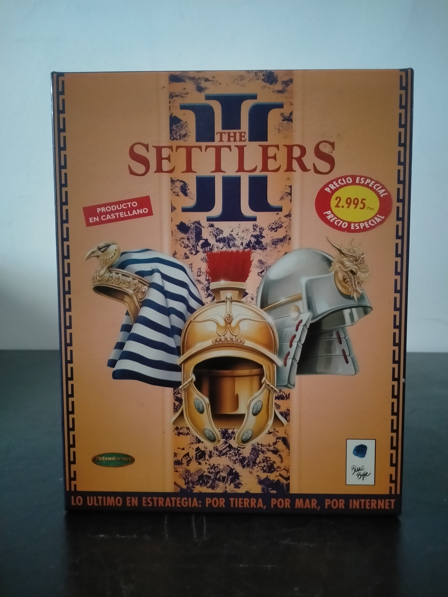

Ficha #000000
The Settlers III
The Settlers III es una entrega clave de la serie de estrategia y simulación económica de Blue Byte, publicada originalmente a finales de los años noventa para Windows. Mantiene la identidad característica de la saga, basada en cadenas de producción, logística, asentamientos autosuficientes, exploración, comercio marítimo y expansión territorial, pero refuerza el componente de estrategia en tiempo real con combate más directo, multijugador por red e Internet y civilizaciones diferenciadas como romanos, egipcios y asiáticos. Esta edición española en caja grande, distribuida por Friendware y señalada como producto en castellano, conserva interés documental por representar la etapa de consolidación de Blue Byte en el mercado PC europeo y por mostrar una estrategia menos centrada en la microgestión militar que en el equilibrio entre economía, territorio y suministro.
- Formato
- Big Box
- Plataforma
- Win95 Win98
- Género
- Estrategia en tiempo real Construcción y gestión Simulación económica Gestión de recursos Colonización
- Serie
- Todos Big Box
- Desarrollador
- Blue Byte Software
- Distribuidor
- Blue Byte Software, Friendware
- EAN
- —
Contenido de la edición
- Caja Big Box
- CD-ROM en caja jewel case
- Manual
- Friendlyware News número 9
- Carátula e inserto de jewel case
Preservación
- Protección
- Otro
- Formato recomendado
- BIN/CUE
- Jugable en virtualización
- Sí
Edición en CD-ROM. Para preservación se recomienda imagen completa del disco, preferiblemente BIN/CUE o formato con datos de bajo nivel si se desea conservar con máxima fidelidad la protección original, además de escanear manual y material impreso. The Settlers III es históricamente conocido por incorporar medidas anticopia que podían alterar el comportamiento de la partida en copias no autorizadas, por lo que conviene verificar la imagen preservada en una instalación limpia de Windows 95/98.